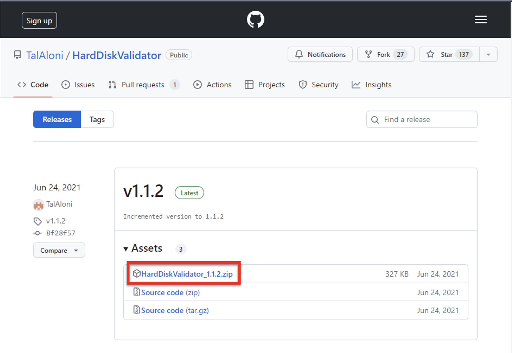
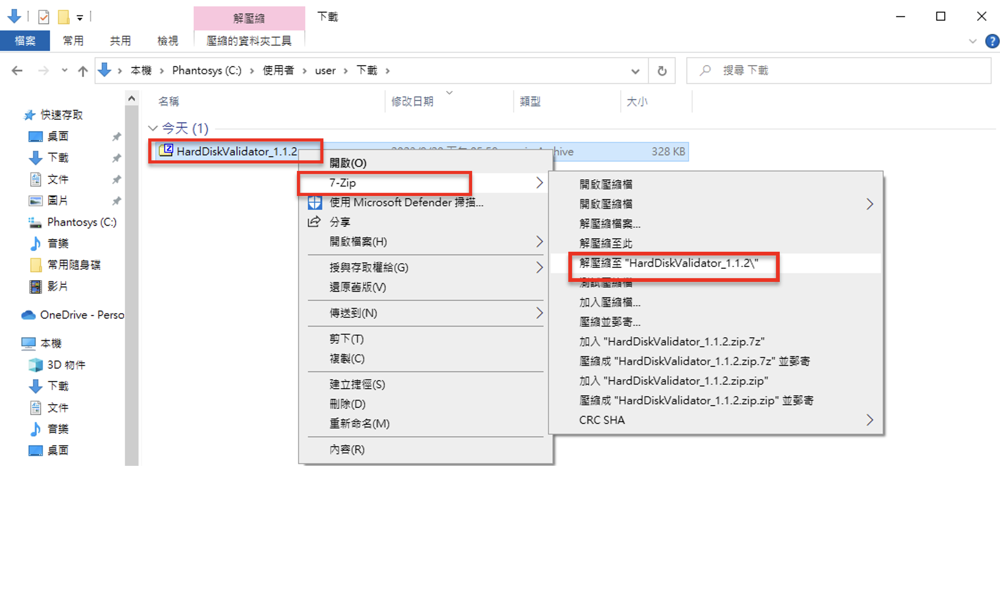
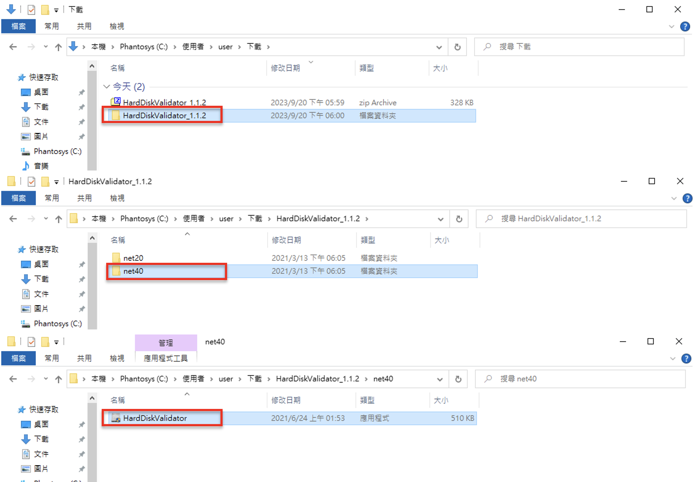
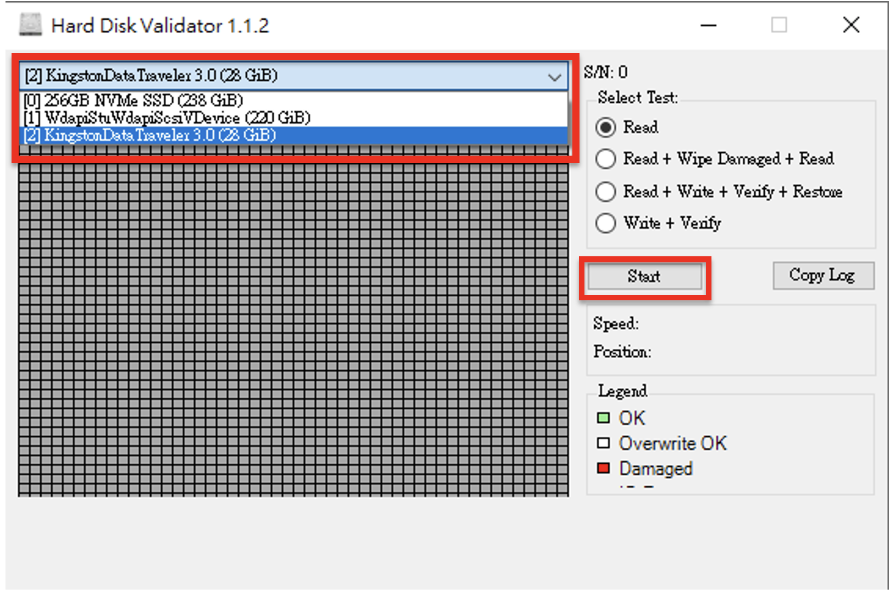
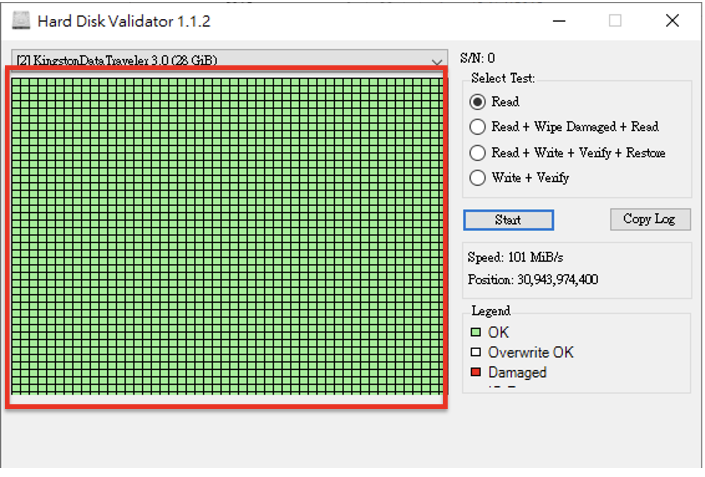

Better safe than sorry - 有備無患
你是否會擔心沒有備份資料的隨身碟或硬碟突然壞軌？ 相信我，如果是很重要且沒有備份的資料若是突然消失或是無法取得對於所有人來說肯定是心急如焚。 為了避免突然發生這種惡夢，我們還是有一些預防措施。 壞軌是硬碟上的部分區域損壞導致無法正常讀寫的區域。 壞軌又分成兩種，一種是物理性壞軌，另外一種是邏輯性壞軌。 邏輯性壞軌：主要是不正常的軟體操作導致的，是磁軌結構異常，可能可以透過格式化來修復壞軌區域 物理性壞軌：磁軌上已經有實際摩擦損壞的部分了，是無法修復的 當然囉，邏輯性壞軌也不一定可以靠格式化來修復；物理性壞軌可能因為讀寫異常或是摩擦導致壞軌。 而且物理性壞軌可怕的地方是壞軌區域會“傳染”，磁區損壞面積有極大可能會擴大，我們不可能有那麼多時間去判斷這是哪種壞軌， 因此我都會將這兩種壞軌視為最嚴重的物理性壞軌，只要我發現硬碟有壞軌，就立刻開始備份。 那要怎麼發現硬碟上有壞軌呢？今天要來跟大家介紹“Hard Disk Validator”。 這是 Hard Disk Validator 的 GitHub 倉庫， 今天要下載的東西就在這裡，請按照以下步驟下載。
- 點擊"Hard Disk Validator_1.1.2.zip" 
- 解壓縮文件夾 
- 在剛才解壓縮的檔案中點擊"net40"，接著點開應用程式 
- 選擇要掃描的硬碟或是隨身碟，接著按下start 
- 等待直到每一個區塊都被掃瞄過，綠色表示區塊暫時沒事，紅色表示區塊受損，必須在一切都變得太晚之前儘快備份 